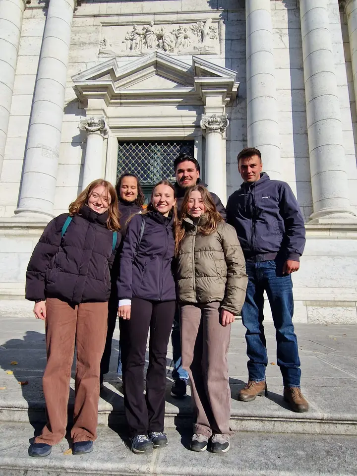
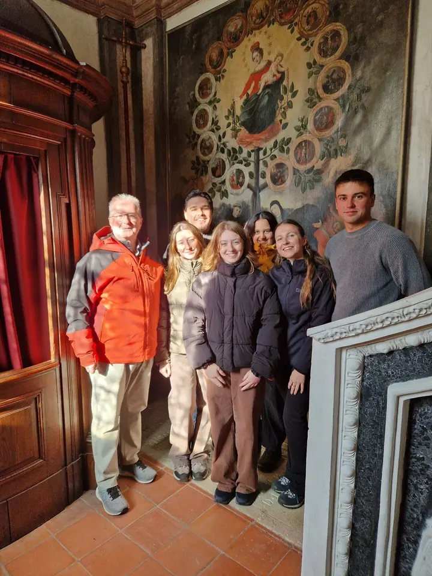
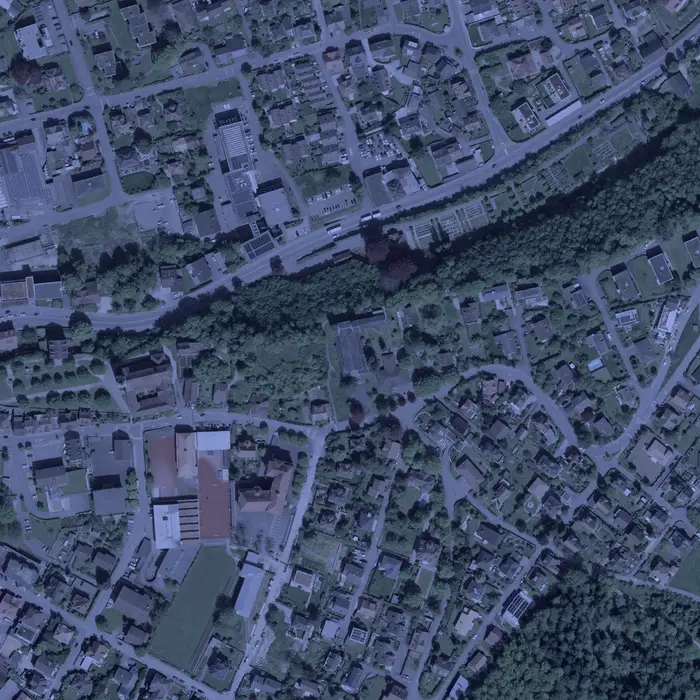

Das sind wir
Sechs junge Erwachsene zwischen 16 und 24 Jahren. Jeden Monat gestalten wir gemeinsam mit Seelsorger Joachim Köhn einen Jugendgottesdienst in der katholischen Kirche in Schönenwerd.
Im Mittelpunkt stehen der Glaube – und die Gemeinschaft. Ob du schon lange glaubst, gerade Fragen hast oder einfach neugierig bist: Du bist willkommen, so wie du bist.


Termine
Jeden letzten Sonntag im Monat, 19 Uhr. Vor Ostern gehen wir am Palmsonntag gemeinsam einen Kreuzweg. Im Dezember machen wir eine Pause.
-
Letzter Sonntag im Monat
Unsere Gottesdienste
-
Taizé-Feier
Einfache Gesänge, die sich wiederholen, bis sie in dir weiterklingen. Kerzenlicht, ein kurzer Bibeltext und Zeit für Stille.
-
Bibel teilen
Wir lesen gemeinsam einen Bibeltext und erzählen einander, was er uns heute sagt. Vorwissen brauchst du keins.
-
Wortgottesdienst
Lieder, Gebete und ein Impuls zu einem Bibeltext – von uns vorbereitet, für dich und alle, die kommen.
Und danach?
Bleiben wir noch zusammen – bei etwas Kleinem zu essen und zu trinken. Oft sind das die schönsten Gespräche des Abends.
So findest du uns

Röm.-kath. Kirche Schönenwerd
Komm doch mal vorbei.
Die neusten Infos, Fotos und Erinnerungen an die Termine teilen wir auf Instagram und in unserer WhatsApp-Community.